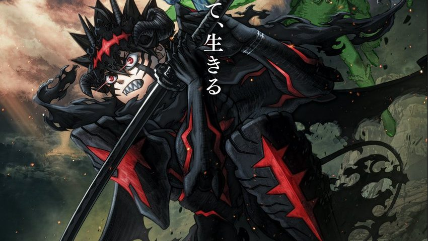
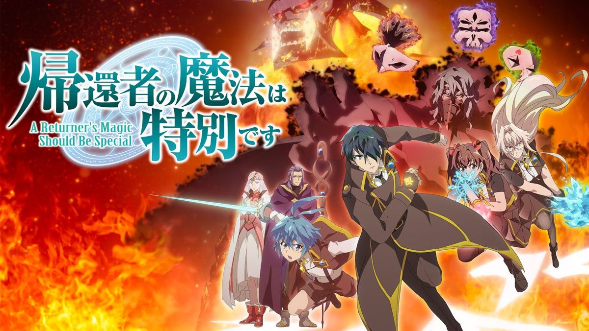

Crunchyroll Anime October 2026: Fall Release Calendar
Crunchyroll's October 2026 anime schedule includes Black Clover Season 2, The Apothecary Diaries Season 3, Aoashi Season 2, PSYREN, Firefly Wedding and more.
Crunchyroll schedule
The Apothecary Diaries Season 3
Crunchyroll
A Tale of the Secret Saint
CrunchyrollRomelia War Chronicle
Crunchyroll
Black Clover Season 2
CrunchyrollAoashi Season 2
Crunchyroll
Reborn as a Space Mercenary
Crunchyroll
Hello, I am a Witch: Release Date, Schedule & Watch Guide
Crunchyroll
So What's Wrong with Getting Reborn as a Goblin? Release Guide
CrunchyrollPSYREN
Crunchyroll
The Laid-Off Cheat-Granting Mage Enjoys a Second Lease on Life
Crunchyroll
Dandivine
Crunchyroll
The World's Strongest Witch
CrunchyrollThe Detective Is Already Dead Season 2
Crunchyroll
A Returner's Magic Should Be Special Season 2
Crunchyroll
Magic Knight Rayearth 2026
Crunchyroll
The Iceblade Sorcerer Shall Rule the World II
Crunchyroll
A Certain Dark Item
CrunchyrollFirefly Wedding
Crunchyroll
The Vermilion Mask
Crunchyroll
Dragon Ball Super: Beerus English Dub Release Date & Schedule
Crunchyroll (supported territories)
Ace of the Diamond act II -Second Season- Cour 2
Crunchyroll
DARK MACHINE THE ANIMATION
Crunchyroll
Chitose Is in the Ramune Bottle 2nd Cour
CrunchyrollUsing the October 2026 Crunchyroll release archive
This archive groups titles from AniNextUp's October 2026 Crunchyroll schedule so readers can compare the month's premieres without searching through individual news posts. It is a record of the announced release calendar, not a live availability checker. Streaming rights, regional catalogs, subtitles and dubbed-audio release dates can differ between countries and may change after the original premiere.
For more detail than a calendar card can provide, follow the individual coverage for Black Clover Season 2, Aoashi Season 2, Romelia War Chronicle, PSYREN and Ace of the Diamond. These guides separate broadcast schedules, episode information and platform details from the month-at-a-glance list above.
If you are deciding what to watch rather than researching a past premiere, start with Where to Watch and verify the current listing on the streaming service in your country. For the broader season, use the anime calendar; for news rather than schedule entries, see the October 2026 news roundup.
How this calendar is maintained
AniNextUp lists confirmed dates from official platform announcements and updates entries when new information is published. Availability can differ by territory.
Browse the complete Fall 2026 anime calendar or compare services in Where to Watch.